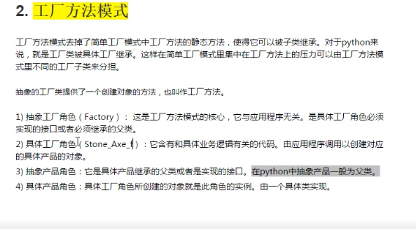

本文包括：语法、变量、运算、函数、文件、类与对象、枚举、异常
python基础
安装
使用python3.6.1
yum install zlib-devel bzip2-devel openssl-devel ncurese-devel gcczlib
OpenStack-云计算
语法
- for/while
while/for也可以跟else，意思是for循环结束之后执行，break会跳过else
for :
if :
else :break
变量
内存
分为堆内存、栈内存。堆中放具体的数据，栈中放引用
基本类型
- 数值类型Numeric
布尔型True
浮点
整形 - 空值
None，在堆内存中也有值
字符串String
单双引号都可以”bus”，’bus’
name=”abcdef” #就是字符串数组
print(name[0])
还可以从右往左数,-1是起始位置
print(name[-1])
切片[起始位置:结束位置:步长]，切片属于顺序型数据的共同用法，list,tuple
包头不包尾find()
my_str = “hello world”
my_str.find(“world”)
找不到返回-1index()
my_str.index(“world”)
找不到返回错误join()
合并2字符串- count()
出现的次数 replace()
替代字符串中某段split()
与Java中相同，返回一个List
若不指定，会将所有的隔开符都隔开partition()
也是切割，将形参中的字符串，隔离出来- capitalize()
字符串首字母 - title()
字符串每个word的首字母大写 - upper()
lower()
startwith()
endswith()
判断开头与结尾ljust(50)
- rjust(50)
center(50)
对齐rstrip
- lstrip
strip
删除空格isalpha
都是字某返回true- isdigit
都是数字 - isalnum
字母或者数字 isspace
只包含空格join
列表转字符串
names=[‘1’,’2’,’’3]
“”.join(names)
“.”.join(names)：笛卡尔积
list列表[]
list
names=[]
- 增
append
在最后追加
extend
两个列表的合并
insert
任意位置插入 - 修改
name[2]=’888’ - 查
in/not in 关键字
判断是否有或者没有
index(元素)
返回元素的下标位
count
统计元素在 删
del
删除某个位置上的元素
del a[2]
remove
删除具体的内容
a.remove
pop
拿出最后一个数据排序
sort()
默认是升序
sort(reverse=True)：降序
reverse()
a.reverse()
a就倒叙了
a[-1::-1]
返回a的倒叙，但a不会倒叙a=[-1::-1]可以
::是一直到的意思- range
c=rang(1,10),lazy的在操作元素时，才会创建
c是一个列表
- range
tuple元组()
元祖与列表类似，不同之处在于元组里的数据不能修改，元组使用(),列表使用[]
创建
my_str=(‘aa’,’bb’,’cc’)
查
my_str[0] ‘aa’
count
index
可变类型：
- 可变类型：list
- 不可变类型:数值，字符串，元组
声明好之后，长度固定，不能修改其中的元素，不能追加
元组中的列表元素可以修改
dict字典{} = map
d = {“michael”:95,”bob”:75,”tracy”:85}
访问
d.get(‘bob’)：键不存在，返回None
d[‘bob’]：键不存在，报错
d[‘john’]=’78’删
del stus[‘bob’]
del stus
stus.pop(‘bob’)
内存立即回收，stus就不存在了
d.clear()
d还存在，元素不在了函数lens(),keys(),values(),items()
1 | stu={"name":"laowang","age":33} |
"name" in stu 返回True
- key值需要可以hash
a=[1,2,4]
b={a:”test”} #此时是不可以的
可以认为，可变类型不能作为key
set集合{}
a={1,3}
print a=set()是空集合
- 增add
- 删pop
- 改
- 查
相互转化
1 | a = {1,2,3,4,4,4,4} |
可变类型与不可变类型
不可变类型:数值，字符串，元组
a=’abc’
a.replace(“a”,’A’)，它返回一个Abc，但a还是abc
id(a) 打印a执行的内存地址
声明好之后，长度固定，不能修改其中的元素，不能追加可变类型：list，字典
可变类型就是在原址上可以增加修改的类型总结
变量与对象
变量：python可以认为都是引用
对象：对象有类型的差异，并且有具体的内存地址，是内存里具体的东西赋值
python的赋值有2种：一种是引用的指向，二种是创建一个对象
直接一个变量等于另一个变量，都是引用的指向修改，不会创建对象
不可改变类型，重新赋值时，会创建新的对象。传参
传参都是引用的指向，不会创建对象python的缓存:见下面的内存管理
1
2
3
4
5
6
7a = 256
b = 256
a is b #True
c = 257
d = 257
c is d #False
python会缓存一些小的对象，比如数值与小的字符串，于是出现以上的情况
案例
- 元组中的列表元素可以修改
1
2
3
4
5
6
7
8
9
10
11
12
13a=[1,2]
b=a
b+=[3,4]
#这时候a也是[1,2,3,4]
def test(num):
num+=num
print(num)
#a=10 ：数值是不可变类型，在num+=num时，会重新开辟空间使num重新指向
#a=[10] ：[]可变类型，在num+=num时，在原用的内存修改
test(a)
print(a)- 元组中的列表元素可以修改
基本类型转换
整数字符串转换为对应的整数
int(‘12’)
小数字符串转换为对应小数
float(‘12.34’)
数字转换为字符串
str(123.45)
ASCII码转换为相应字符
chr(97)
字符转换为响应ASCII码
ord(‘a’)
总结
dict = pair
map中可以放很多数据，而中仅能放一条
[{},{}]这种结构还差不多
python是一种弱类型语言，
{“name”:’sun’,”age”:18}，name与age其实是结构
作用域
命名空间（namespace）
全局变量与局部变量
- LEGB: locals > enclosing fuction(闭包) > globals > builtins(内建)
在函数内部要使用global时,需要声明:global a
globals()函数可以看全局的属性
locals()函数,可以看到局部的属性
dir(builtin)== 和 is
is是比较两个引用是否指向了统一对象(引用比较) 或者说地址比较
== 是比较两个对象是否相等（值比较）
1 | a = [1,2,3] |
运算
进制、位运算
1 | int(o, 8) = 10 #把8转换为八进制的10 |
位与&
位或|
位异或^
取反~
左移<<
右移>>
函数
表达式或者关键字没有(),且有：
函数才有()
内置函数
语法
1 | def print_hello(): |
看到def后会加载函数，并不会执行
全局变量与局部变量
作用域与C语言相同即，全局变量可以在函数内获取并修改
修改不可变类型的引用，global
不定长参数
1 | def test(x,y,*args): |
不定长参数是以元组的方式传入
1 | def test(x,y, **kwarg): |
此时候的不定参数是键值对
递归函数
匿名函数lambda
lambda [arg1[,agr2…agrn]]:表达式
sum = lambda x,y:x+y
print(sum(22,45))缺点不能简单的操作，因为函数体只能是表达式
lambda可以作为实参传递给函数
1 | def test(a,b,func): |
感觉像是懒加载，以及lambda也是一个引用，定义在栈上
- dict排序
1 | stus=[{"name":"zs","age":12},{"name":"ls","age":14}] |
- 动态语言：用户可以随意变化表达式
1 | def test1(a,b,func): |
交换
a=1
b=3
#借用元组来实现的
a,b=b,a
文件操作
文件
与C语言类似
f = open(“test.txt”,’w’)
r/w/a
r+打开一个文件用于读写，文件指针在开头
w+读写，如果文件已存在就将其覆盖，否则就创建
a+读写，不创建，文件指针在最后。
1 | f.close() |
文件夹
1 | import os |
实例
从指定目录下，找包含有hello的py文件
1 | import os |
类和对象
定义类
class 类名：
属性
方法列表
方法第一参数一定是self
对象名 = 类名()
实例
使用上与C++/Jave相同
1 | class Car: |
不同
属性上很另类
而且有self:self其实与this有些类似
魔法方法xxx
init(self)
类于构造函数，但构造函数是构造时，init是构造之后初始化的时候
1 | def __init__(self): |
初始化对象的方法，不是构造方法：new()构造对象–>得到一对象–>init(self)
del(self)
当内存中释放一个对象时，调用del()方法
类似于析构函数
注意python中=，都是引用，但其引用可以重新指向
str(self)
def str(self):
return “string here”
类似与Java的toString方法
new(cls):
- 必须有返回值，类的对象
- 如果不返回，对象不会构建，也就不会运行init方法
return object.new(cls) - 与init区别
1.new是构造，init是初始化
2.new是类方法[可以通过类来调用]，init是普通方法
3.先执行new后执行init
掷骰子
- range()也是包头不包尾
- random.randint(1,7)需要引入import random
- 思路
掷骰子游戏可以有多个人来玩，多个骰子在一个骰子钟里抛掷相加得到结果
Game与Play是聚合，Play个数可以指定
Game与Dices（骰子钟）是组合关系
Dices与Dice也是聚合关系，个数可以指定
私有化（隐藏）
属性：__xxx
方法：def __xxx():
继承
定义
class Animal:
class Dog(Animal):
在子类后加()，写入父类即可。有些像函数，不可混。差异
子类的init()会覆盖掉父类的init()
经测试new方法也会覆盖掉父类的
new会覆盖掉init
父类的公有属性，如果父类init方法没有调用，也就继承不了，也就是说：属性没有继承super().init()可以手动去实现多继承
class C(A,B):
就是多继承，继承关系的优先级C>A>Bprint(C.mro)可以打印继承关系
可以所有类看出从object中继承，这一点与Java相同
其中的init(),del()重写
子类与父类的方法名相同就叫重写
super().init()
重写中，可以通过super()调用父类的方法多态
- python是弱类型语言，没有多态
类属性（对象属性的区别）与类方法
- 类属性是类对象所拥有的属性，它被类对象的实例所共有，在内存中之后一个副本
- 就是C++/Java的静态成员变量
- 定义
1 | class People(object): |
对象属性
就是对象自己的
self.name = name 这种区别
类属性可以被子类继承，对象属性不能直接继承
继承仅是继承父类的方法，以及类属性
类属性只能通过类来修改：People.name = “ww”
当时有p.name = “zs”定义了一个对象属性name类方法
一定要在类上加一个修饰器（注解）
@classmethod
def getName(cls):
其中cls代表调用这个方法的类
类方法可以通过类名来调用People.getName()
类方法可以修改类属性静态方法
@staticmethod
静态方法是类方法的特殊一种，属于类，没有默认传递的参数
@staticmethod
def getAge():
调用与类方法相同：对象与类都可以调用
由于没有cls，只能通过类名在修改类属性
单例
1.伪单例：自己写getInstance()静态方法，通过调用此方法来获得对象
2.真单例：重写new方法，所有的构造的都是单例
简单工厂
这个简单工厂就是用一个factory类的一个类方法，来生成继承关系的不同子类对象。

枚举
1 | from enum import Enum |
类的数据隐藏
x双下划线，属性私有，实现方法名字重整：num，在类dir(t)时，会改变私有对象的名字:_类名属性名，其实并没有真正的隐藏，只是外部的访问上改了名字
_x单下划线，被当作模块导入时，不导入。外边是可以访问的
xx__:名字空间的魔法属性:init
self这里不是关键字，第一个代表对象本身，可以用this等来代替
property用法
- 使用property方法升级getter 与 setter
1 | class Test: |
#这种写法就把money变成共有不就好了
- 装饰器写法
@property : getter
@money.setter : setter
方法名与属性名的去掉__一致
1 | class Test: |
异常
语法
try..except，except就是catch
Exception/NameError/FileNotFoundError/ZeroDivisionError
except可以用元组来实现多个异常
as ex，ex是异常变量
1 | try: |
抛异常：raise exception
异常嵌套，异常传递
自定义异常
class PasswordException(Exception):
模块
- 模块相当于jar包
- import 即可
模块与包
相当于jar包导入
import 模块名
模块名.函数名()import random
random.randint(1,5)from 模块名 import 函数名(变量，类等)
from random import randint
randint(1,5)from 模块 import *【几乎不用】
一个模块全部内容都导入as 导入时，给模块重新命名
import random as rdm
rdm.randint(1,5)
random__file__注意
若导入有相同的函数名，后导入的会覆盖先导入的
测试
name:main()
if(name==”main“):#python解释器主动执行该模块代码为了测试
print(isnull(“”))
all：后边加列表，用于写出模块中需要导出的方法/变量/类，但这种方式只有from ..import *时可用，在python3中，使用较少
all=[“isnull”]
包
本质上就是一个目录，把模块放入目录中，就可称为一个包
优先到当前目录，然后是python系统目录
import 包(文件夹).模块(文件)
from 包 import 模块
python3中目录就是一个包
python2中需要有init.py文件,即使是空文件也可以
如果在init.py中增加from . import module1，那么在其他中可以直接import包名
这里的import类似于c/c++的include
发布
把自己写的模块，发布到python的系统目录下
- setup.py
在包同级目录下增加setup.py文件，并写
1 | from distutils.core import setup |
其他
传参
import sys
sys.argv
参数第一个是.py本身
sys.argv[1::]
列表推导式
其实就是创建列表/字典的
a=[i for i in range(1,10)]
a=[i**i for i in range(1,10)]
b=[x for x in range(1,3) for y in range(0,2)]
[1,1,2,2] 循环的嵌套1循环2次，2也也是2次
c=[x for x in range(1,101) if x%2==1]
传参

其实即使函数的默认参数只会创建一次,因为它懒